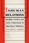
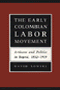

|
The Union Inspiration in American Politics
The Autoworkers and the Making of a Liberal Industrial Order
Amberg, Stephen
368 pp • 6x9 • Fall 1994
cloth 978-1-56639-189-4
|
|
Against Capital in the Twenty-First Century
A Reader of Radical Undercurrents
edited by Asimakopoulos, John and Richard Gilman-Opalsky
390 pp • 6x9 • Fall 2017
paper 978-1-4399-1358-1
cloth 978-1-4399-1357-4
|
|
The Critical Study of Work
Labor, Technology, and Global Production
edited by Baldoz, Rick, Charles Koeber and Philip Kraft
296 pp • 7x10 • Spring 2001
paper 978-1-56639-798-8
cloth 978-1-56639-797-1
|
|
Going by the Book
The Problem of Regulatory Unreasonableness
Bardach, Eugene and Robert A. Kagan
350 pp • Spring 1982
paper 978-0-87722-252-1
cloth 978-0-87722-251-4 |
|
Measuring the Efficiency of Public Programs
Costs and Benefits in Vocational Rehabilitation
edited by Berkowitz, Monroe
256 pp • Spring 1988
cloth 978-0-87722-527-0 |
|
Consuming Work
Youth Labor in America
Besen-Cassino, Yasemin
202 pp • 6x9 • Fall 2013
paper 978-1-4399-0949-2
cloth 978-1-4399-0948-5 |
|
The Cost of Being a Girl
Working Teens and the Origins of the Gender Wage Gap
Besen-Cassino, Yasemin
238 pp • 6x9 • Fall 2017
paper 978-1-4399-1349-9
cloth 978-1-4399-1348-2 |
|
Reducing Workweeks to Prevent Layoffs
The Economic and Social Impacts of Unemployment Insurance-Supported Work Sharing
Best, Fred, foreword by Herbert J. Gans
228 pp • Fall 1987
cloth 978-0-87722-506-5 |
|
Global Production
The Apparel Industry in the Pacific Rim
edited by Bonacich, Edna, Lucie Cheng, Norma Chinchilla, Nora Hamilton and Paul Ong
400 pp • 6x9 • Spring 1994
paper 978-1-56639-169-6
cloth 978-1-56639-168-9
|
 |
Cheaper by the Hour
Temporary Lawyers and the Deprofessionalization of the Law
Brooks, Robert
234 pp • 6x9 • Spring 2011
paper 978-1-4399-0286-8
cloth 978-1-4399-0285-1
|
|
Closing the Book on Homework
Enhancing Public Education and Freeing Family Time
Buell, John
176 pp • 5.5x8.25 • Fall 2003
paper 978-1-59213-218-8
cloth 978-1-59213-217-1
|

|
Against the Deportation Terror
Organizing for Immigrant Rights in the Twentieth Century
Buff, Rachel Ida
282 pp • 6x9 • Fall 2017
paper 978-1-4399-1534-9
cloth 978-1-4399-1533-2 |
|
Work, Inc.
A Philosophical Inquiry
Byrne, Edmund F.
360 pp • Spring 1990
paper 978-0-87722-957-5
cloth 978-0-87722-688-8 |
|
Process of Occupational Sex-Typing
The Feminization of Clerical Labor in Great Britain, 1870-1936
Cohn, Samuel
288 pp • Fall 1985
cloth 978-0-87722-402-0 |
|
Black Corporate Executives
The Making and Breaking of a Black Middle Class
Collins, Sharon M.
216 pp • 5.5x8.25 • Fall 1996
paper 978-1-56639-474-1
cloth 978-1-56639-473-4
|
|
Women and Trade Unions in Eleven Industrialized Countries
edited by Cook, Alice H., Val R. Lorwin and Arlene Kaplan Daniels
360 pp • Fall 1983
cloth 978-0-87722-319-1 |
 |
Work, Community, and Power
The Experience of Labor in Europe
edited by Cronin, James E. and Carmen Sirianni
306 pp • Spring 1983
paper 978-0-87722-309-2
cloth 978-0-87722-308-5 |
|
Labor's Time
Shorter Hours, the UAW, and the Struggle for American Unionism
Cutler, Jonathan
256 pp • 5.5x8.25 • Spring 2004
paper 978-1-59213-247-8
cloth 978-1-59213-246-1
|
|
Journeys in Sociology
From First Encounters to Fulfilling Retirements
edited by Darling, Rosalyn Benjamin and Peter J. Stein
Published in collaboration with the American Sociological Association Opportunities in Retirement Network
264 pp • 6x9 • Spring 2017
paper 978-1-4399-1475-5
cloth 978-1-4399-1474-8
|
 |
New Immigrants, Old Unions
Organizing Undocumented Workers in Los Angeles
Delgado, H�ctor L.
200 pp • 5.5x8.25 • Spring 1993
paper 978-1-56639-205-1
cloth 978-1-56639-044-6 |
|
Organizing the Movement
The Roots and Growth of ACORN
Delgado, Gary
256 pp • Fall 1985
paper 978-0-87722-492-1
cloth 978-0-87722-393-1 |
 |
Creating a New World Economy
Forces of Change and Plans for Action
edited by Epstein, Gerald, Julie Graham and Jessica Nembhard, foreword by Samuel Bowles
496 pp • 6x9 • Fall 1993
paper 978-1-56639-054-5
cloth 978-1-56639-053-8 |
 |
Labor at the Ballot Box
The Massachusetts Prevailing Wage Campaign of 1988
Erlich, Mark
232 pp • Fall 1990
cloth 978-0-87722-727-4 |
 |
Monitoring Sweatshops
Workers, Consumers, and the Global Apparel Industry
Esbenshade, Jill
288 pp • 6x9 • Spring 2004
paper 978-1-59213-256-0
cloth 978-1-59213-255-3
|
 |
The Story of Reo Joe
Work, Kin, and Community in Autotown, U.S.A.
Fine, Lisa M.
256 pp • 6x9 • Spring 2004
paper 978-1-59213-258-4
cloth 978-1-59213-257-7
|
|
Work on the Waterfront
Worker Power and Technological Change in a West Coast Port
Finlay, William
224 pp • 5.5x8.25 • Spring 1988
cloth 978-0-87722-523-2 |
|
Critical Studies in Organization and Bureaucracy
edited by Fischer, Frank and Carmen Sirianni
704 pp • 6x9 • Fall 1993
paper 978-1-56639-122-1
cloth 978-1-56639-121-4
|
|
Resisting Work
The Corporatization of Life and Its Discontents
Fleming, Peter
210 pp • 5.5x8.25 • Spring 2014
paper 978-1-4399-1113-6
cloth 978-1-4399-1112-9 |
|
Black Workers
A Documentary History from Colonial Times to the Present
edited by Foner, Philip S. and Ronald L. Lewis
400 pp • Fall 1988
paper 978-0-87722-554-6
cloth 978-0-87722-592-8 |
|
Trade Union Gospel
Christianity and Labor in Industrial Philadelphia, 1865-1915
Fones-Wolf, Ken
260 pp • Fall 1989
cloth 978-0-87722-652-9 |

|
Out in the Union
A Labor History of Queer America
Frank, Miriam
240 pp • 6x9 • Spring 2014
paper 978-1-4399-1140-2
cloth 978-1-4399-1139-6
|
|
Sisterhood and Solidarity
Workers' Education for Women, 1914-1984
Frederickson, Mary and Joyce L. Kornbluh
Fall 1984
cloth 978-0-87722-328-3 |
 |
In Transit
The Transport Workers Union in New York City, 1933-1966
Freeman, Joshua B.
464 pp • 6x9 • Fall 2001
paper 978-1-56639-922-7
|
|
Taking Time
Parental Leave Policy and Corporate Culture
Fried, Mindy
256 pp • 5.5x8.25 • Fall 1998
paper 978-1-56639-647-9
cloth 978-1-56639-646-2
|
|
Going Global
Culture, Gender, and Authority in the Japanese Subsidiary of an American Corporation
Fuller, Ellen V.
232 pp • 5.25x8.25 • Fall 2008
paper 978-1-59213-689-6
cloth 978-1-59213-688-9
|
|
Work and Democracy in Socialist Cuba
Fuller, Linda O.
311 pp • 6x9 • Spring 1992
cloth 978-0-87722-893-6 |
|
Free Trade and Uneven Development
The North American Apparel Industry after NAFTA
edited by Gereffi, Gary, David Spener and Jennifer Bair
368 pp • 7x10 • Fall 2002
paper 978-1-56639-968-5
cloth 978-1-56639-967-8
|
|
Workforce Intermediaries for the Twenty-first Century
edited by Giloth, Robert P.
432 pp • 6x9 • Fall 2003
cloth 978-1-59213-204-1
|
|
Workforce Development Politics
Civic Capacity and Performance
edited by Giloth, Robert P.
296 pp • 6x9 • Fall 2003
paper 978-1-59213-229-4
cloth 978-1-59213-228-7
|
|
Women's Paid and Unpaid Labor
The Work Transfer in Health Care and Retailing
Glazer, Nona Y.
360 pp • 6x9 • Fall 1992
paper 978-1-56639-199-3
cloth 978-0-87722-979-7 |
|
The Fragile Bridge
Paterson Silk Strike, 1913
Golin, Steve
328 pp • 6x9 • Spring 1988
paper 978-1-56639-005-7
cloth 978-0-87722-534-8 |
|
Workers' Struggles, Past and Present
A 'Radical America' Reader
edited by Green, James
437 pp • Spring 1983
paper 978-0-87722-315-3
cloth 978-0-87722-293-4 |
|
On Strike at Hormel
The Struggle for a Democratic Labor Movement
Green, Hardy, foreword by David Moberg
369 pp • Fall 1989
paper 978-0-87722-832-5
cloth 978-0-87722-635-2 |
|
The Triangle Fire, the Protocols of Peace, and Industrial Democracy in Progressive Era New York
Greenwald, Richard A.
344 pp • 6x9 • Spring 2005
paper 978-1-59213-175-4
cloth 978-1-59213-174-7
|
|  |
Inhuman Relations
Quality Circles and Anti-Unionism in American Industry
Grenier, Guillermo J.
256 pp • Fall 1987
paper 978-0-87722-632-1
cloth 978-0-87722-502-7 |
|
Working Poor
Farmworkers in the United States
Griffith, David and Ed Kissam with Jeromino Camposeco, Anna Garc�a, Max Pfeffer, David Runsten, and Manuel Valdes Pizzini
368 pp • 6x9 • Fall 1994
paper 978-1-56639-239-6
cloth 978-1-56639-238-9 |
|
Fishers at Work, Workers at Sea
A Puerto Rican Journey through Labor and Refuge
Griffith, David and Manuel Vald�s Pizzini
280 pp • 6x9 • Fall 2001
paper 978-1-56639-911-1
cloth 978-1-56639-910-4
|
|
The Crisis of American Labor
Operation Dixie and the Defeat of the CIO
Griffith, Barbara S.
240 pp • Fall 1987
cloth 978-0-87722-503-4 |
|
Broken Promise
The Subversion of U.S. Labor Relations Policy, 1947-1994
Gross, James A.
422 pp • 6x9 • Fall 2003
paper 978-1-59213-225-6
|
|
Earthly Plenitudes
A Study on Sovereignty and Labor
Gulli, Bruno
New in Paperback!
200 pp • 6x9 • Fall 2009
paper 978-1-59213-980-4
cloth 978-1-59213-979-8
|
|
Labor of Fire
The Ontology of Labor between Economy and Culture
Gull�, Bruno
232 pp • 6x9 • Fall 2005
paper 978-1-59213-113-6
cloth 978-1-59213-112-9
|
 |
Toward the Modern Economy
Early Industry in Europe, 1500-1800
Gutmann, Myron P.
280 pp • Spring 1988
cloth 978-0-87722-547-8 |
 |
Seeking Community in a Global City
Guatemalans and Salvadorans in Los Angeles
Hamilton, Nora and Norma Stoltz Chinchilla
304 pp • 6x9 • Spring 2001
paper 978-1-56639-868-8
cloth 978-1-56639-867-1
|

|
The Temp Economy
From Kelly Girls to Permatemps in Postwar America
Hatton, Erin, foreword by Nelson Lichtenstein
232 pp • 5.5x8.25 • Fall 2010
paper 978-1-4399-0081-9
cloth 978-1-4399-0080-2
|
|
Just a Temp
Henson, Kevin D.
224 pp • 5.5x8.25 • Spring 1996
paper 978-1-56639-386-7
cloth 978-1-56639-385-0
|
|
Working Time in Transition
The Political Economy of Working Hours in Industrial Nations
edited by Hinrichs, Karl, William Roche and Carmen Sirianni
352 pp • Spring 1991
cloth 978-0-87722-757-1 |
|
The Psychodynamics of Organizations
edited by Hirschhorn, Larry and Carole K. Barnett
288 pp • 6x9 • Spring 1993
paper 978-1-56639-021-7
cloth 978-1-56639-020-0 |
|
We Can't Eat Prestige
The Women Who Organized Harvard
Hoerr, John
280 pp • 6x9 • Spring 1997
paper 978-1-56639-925-8
cloth 978-1-56639-535-9
|
|
Cold War in a Hot Zone
The United States Confronts Labor and Independence Struggles in the British West Indies
Horne, Gerald
272 pp • 6x9 • Spring 2007
paper 978-1-59213-628-5
cloth 978-1-59213-627-8
|
|
Free Time
The Forgotten American Dream
Hunnicutt, Benjamin Kline
250 pp • 6x9 • Spring 2013
paper 978-1-4399-0715-3
cloth 978-1-4399-0714-6 |
|
Kellogg's Six-Hour Day
Hunnicutt, Benjamin Kline
288 pp • 6x9 • Fall 1996
paper 978-1-56639-448-2
cloth 978-1-56639-447-5
|
|
Work Without End
Abandoning Shorter Hours for the Right to Work
Hunnicutt, Benjamin Kline
416 pp • Spring 1988
paper 978-0-87722-763-2
cloth 978-0-87722-520-1 |
 |
Laboring for Rights
Unions and Sexual Diversity Across Nations
edited by Hunt, Gerald
328 pp • 7x10 • Fall 1999
paper 978-1-56639-718-6
cloth 978-1-56639-717-9
|
 |
Jobs Aren't Enough
Toward a New Economic Mobility for Low-Income Families
Iversen, Roberta Rehner, and Annie Laurie Armstrong
296 pp • 6x9 • Spring 2006
paper 978-1-59213-356-7
cloth 978-1-59213-355-0
|
 |
Sisterhood Denied
Race, Gender, and Class in a New South Community
Janiewski, Dolores E.
272 pp • 6x9 • Fall 1984
paper 978-1-56639-006-4
cloth 978-0-87722-361-0 |
|
A Needle, a Bobbin, a Strike
Women Needleworkers in America
edited by Jensen, Joan M. and Sue Davidson
256 pp • Fall 1984
paper 978-0-87722-407-5
cloth 978-0-87722-340-5 |
|
The Challenge of Restructuring
North American Labor Movements Respond
edited by Jenson, Jane and Rianne Mahon
488 pp • 6x9 • Fall 1992
cloth 978-0-87722-981-0 |
|
Technological Turf Wars
A Case Study of the Computer Antivirus Industry
Johnston, Jessica
232 pp • 5.5x8.25• Fall 2008
paper 978-1-59213-882-1
cloth 978-1-59213-881-4
|
|
Chaos on the Shop Floor
A Worker's View of Quality, Productivity, and Management
Juravich, Tom
160 pp • Spring 1985
paper 978-0-87722-561-4
cloth 978-0-87722-375-7 |
|
The Sign of the Burger
McDonald's and the Culture of Power
Kincheloe, Joe L.
240 pp • 5.5x8.25 • Fall 2001
paper 978-1-56639-932-6
cloth 978-1-56639-931-9
|
|
The University Against Itself
The NYU Strike and the Future of the Academic Workplace
edited by Krause, Monika, Mary Nolan, Michael Palm and Andrew Ross
280 pp • 6x9 • Fall 2007
paper 978-1-59213-741-1
cloth 978-1-59213-740-4
|
|
Engineering Culture
Control and Commitment in a High-Tech Corporation
Kunda, Gideon
Revised Edition
320 pp • 6x9 • Fall 2006
paper 978-1-59213-546-2
cloth 978-1-59213-545-5
|
|
Working People of Philadelphia, 1800-1850
Laurie, Bruce
Spring 1983
paper 978-0-87722-292-7
|
|
Labor's War at Home
The CIO in World War II
Lichtenstein, Nelson
352 pp • 6x9 • Spring 2003
paper 978-1-59213-197-6
cloth 978-1-59213-196-9
|
|
Breaking Even
The Financial Management of Not-for-Profit Businesses
Lohmann, Roger A.
Fall 1981
paper 978-0-87722-247-7
cloth 978-0-87722-166-1 |
|
Working in the Service Society
edited by Macdonald, Cameron Lynne and Carmen J. Sirianni
376 pp • 6x9 • Fall 1996
paper 978-1-56639-480-2
cloth 978-1-56639-479-6 |
|
Farm Workers, Agribusiness, and the State
Majka, Linda C. and Theo J. Majka
320 pp • Spring 1982
cloth 978-0-87722-256-9 |
|
The Company We Keep
Occupational Community in the High-Tech Network Society
Marschall, Daniel
204
pp • 6x9 • Spring 2012
paper 978-1-4399-0756-6
cloth 978-1-4399-0755-9
|
|
The Politics of the Possible
The Brazilian Rural Workers' Trade Union Movement, 1964-1985
Maybury-Lewis, Biorn
320 pp • 6x9 • Spring 1994
paper 978-1-56639-167-2
cloth 978-1-56639-166-5 |
|
One-Eyed Science
Occupational Health and Women Workers
Messing, Karen, foreword by Jeanne Mager Stellman
264 pp • 5.5x8.2 • Spring 1998
paper 978-1-56639-598-4
cloth 978-1-56639-597-7
|
 |
Striking Steel
Solidarity Remembered
Metzgar, Jack
320 pp • 6x9 • Fall 1999
paper 978-1-56639-739-1
cloth 978-1-56639-738-4
|
|
Live Wire
Women and Brotherhood in the Electrical Industry
Moccio, Francine A.
288 pp • 6x9 • Spring 2009
paper 978-1-59213-738-1
cloth 978-1-59213-737-4
|
|
Technology Assessment
A Feminist Perspective
Morgall, Janine Marie
264 pp • 5.5x8.25 • Fall 1993
paper 978-1-56639-091-0
cloth 978-1-56639-090-3 |
 |
Deregulating Desire
Flight Attendant Activism, Family Politics, and Workplace Justice
Murphy, Ryan Patrick 252 pp • 6x9 •
Fall 2016
paper 978-1-4399-0989-8
cloth 978-1-4399-0988-1 |
|
Immigrants, Unions, and the New U.S. Labor Market
Ness, Immanuel
240 pp • 5.5x8.25 • Spring 2005
paper 978-1-59213-041-2
cloth 978-1-59213-040-5
|
|
Labor's Story in the United States
Nicholson, Philip Yale
376 pp • 7x10 • Spring 2004
paper 978-1-59213-239-3
cloth 978-1-59213-020-7
|
|
Liberalism at Work
The Rise and Fall of OSHA
Noble, Charles
304 pp • Spring 1989
paper 978-0-87722-665-9
cloth 978-0-87722-421-1 |
|
Beyond Employment
Time, Work, and the Informal Economy
Offe, Claus and Rolf G. Heinze, translated by Alan Braley
248 pp • 6x9 • Spring 1992
cloth 978-0-87722-951-3 |
|
Puerto Rican Women and Work
Bridges in Transnational Labor
edited by Ortiz, Altagracia
272 pp • 6x9 • Fall 1996
paper 978-1-56639-451-2
cloth 978-1-56639-450-5
|
 |
Pedal to the Metal
The Work Life of Truckers
Ouellet, Lawrence J.
272 pp • 6x9 • Spring 1994
paper 978-1-56639-176-4
cloth 978-1-56639-175-7 |
|
Untidy Gender
Domestic Service in Turkey
Ozyegin, Gul
272 pp • 6x9 • Fall 2000
paper 978-1-56639-808-4
cloth 978-1-56639-807-7
|
|
Labor and Capital on the African Copperbelt
Parpart, Jane L.
248 pp • Fall 1983
cloth 978-0-87722-325-2 |
|
Credit Where It's Due
Development Banking for Communities
Parzen, Julia Ann and Michael Hall Kieschnick
288 pp • 5.5x8.25 • Fall 1992
paper 978-1-56639-185-6
cloth 978-0-87722-811-0 |
|
Dishing It Out
Power and Resistance Among Waitresses in a New Jersey Restaurant
Paules, Greta Foff
225 pp • 5.5x8.25 • Fall 1991
paper 978-0-87722-888-2
cloth 978-0-87722-887-5
|
|
Cheap Amusements
Working Women and Leisure in Turn-of-the-Century New York
Peiss, Kathy
288 pp • 5.5x8.25 • 1985
paper 978-0-87722-500-3
|
 |
Psychology of Judgment and Decision Making
Plous, Scott
Spring 1993
cloth 978-0-87722-913-1 |
|
Ending Poverty as We Know It
Guaranteeing a Right to a Job at a Living Wage
Quigley, William P.
256 pp • 6x9 • Spring 2003
paper 978-1-59213-033-7
cloth 978-1-59213-032-0
|
|
The Nights of Labor
The Workers' Dream in Nineteenth-Century France
Ranci�re, Jacques, translated by John Drury, introduction by Donald Reid
448 pp • Fall 1989
paper 978-0-87722-833-2
cloth 978-0-87722-625-3 |
|
Global Decisions, Local Collisions
Urban Life in the New World Order
Ranney, David
272 pp • 7x10 • Fall 2002
paper 978-1-59213-001-6
cloth 978-1-59213-000-9
|
|
Comparable Worth and Wage Discrimination
Technical Possibilities and Political Realities
Remick, Helen
320 pp • Spring 1984
paper 978-0-87722-385-6
cloth 978-0-87722-345-0 |
 |
Waiting on Washington
Central American Workers in the Nation's Capital
Repak, Terry A.
272 pp • 5.5x8.25 • Spring 1995
paper 978-1-56639-302-7
cloth 978-1-56639-301-0 |
 |
Job Queues, Gender Queues
Explaining Women's Inroads into Male Occupations
Reskin, Barbara F. and Patricia A. Roos
388 pp • 6x9 • Fall 1990
paper 978-0-87722-744-1
cloth 978-0-87722-743-4
|
|
The Production of Living Knowledge
The Crisis of the University and the Transformation of Labor in Europe and North America
Roggero, Gigi, foreword by Enda Brophy
214 pp • 5.5x8.25 • Fall 2011
cloth 978-1-4399-0573-9
|
 |
Between Women
Domestics and Their Employers
Rollins, Judith
256 pp • 5.5x8.25 • Fall 1985
paper 978-0-87722-491-4
cloth 978-0-87722-383-2 |
|
No-Collar
The Humane Workplace and Its Hidden Costs
Ross, Andrew
312 pp • 6.125x9.25 • Fall 2004
paper 978-1-59213-150-1
|
|
The Origins of Southern Sharecropping
Royce, Edward
288 pp • 5.5x8.25 • Fall 1993
cloth 978-1-56639-069-9 |
|
Out of the Jungle
Jimmy Hoffa and the Remaking of the American Working Class
Russell, Thaddeus
296 pp • 6x9 • Spring 2003
paper 978-1-59213-027-6
|
|
AFSCME's Philadelphia Story
Municipal Workers and Urban Power in the Twentieth Century
Ryan, Francis
320 pp • 6x9 • Fall 2010
paper 978-1-4399-0279-0
cloth 978-1-4399-0278-3
|
 |
Technological Change and Co-Determination in Sweden
Sandberg, �ke with Gunnar Broms Arne Grip Lars Sundstrom Jesper Steen and Peter Ullmark, foreword by Andrew Martin
360 pp • 6x9 • Spring 1992
cloth 978-0-87722-918-6
|
|
Alone in a Crowd
Women in the Trades Tell Their Stories
Schroedel, Jean Reith
280 pp • Spring 1985
paper 978-0-87722-397-9
cloth 978-0-87722-378-8 |
|
Dangerous Trade
Histories of Industrial Hazard across a Globalizing World
edited by Sellers, Christopher and Joseph Melling
228 pp • 6x9 • Fall 2011
paper 978-1-4399-0469-5
cloth 978-1-4399-0468-8
|
|
The Business of Practicing Law
The Work Lives of Solo and Small-Firm Attorneys
Seron, Carroll
240 pp • 6x9 • Spring 1996
paper 978-1-56639-407-9
cloth 978-1-56639-406-2
|
|
Getting Paid While Taking Time
The Women's Movement and the Development of Paid Family Leave Policies in the United States
Sholar, Megan A.
252 pp • 5.5x8.25 • Fall 2016
paper 978-1-4399-1295-9
cloth 978-1-4399-1294-2
|
|
Organizing In Hard Times
Labor and Neighborhoods In Hartford
Simmons, Louise B.
200 pp • 5.5x8.25 • Spring 1994
paper 978-1-56639-156-6
cloth 978-1-56639-155-9 |
|
Worker Participation and the Politics of Reform
edited by Sirianni, Carmen
384 pp • Spring 1987
cloth 978-0-87722-464-8 |
|
Challenging the Chip
Labor Rights and Environmental Justice in the Global Electronics Industry
edited by Smith, Ted, David A. Sonnenfeld and David Naguib Pellow, foreword by Jim Hightower
376 pp � 6x9 � Spring 2006
paper 978-1-59213-330-7
cloth 978-1-59213-329-1
|
|
Helping Out
Children's Labor in Ethnic Businesses
Song, Miri
247 pp • 5.5x8.25 • Spring 1999
paper 978-1-56639-709-4
cloth 978-1-56639-708-7
|
|  |
The Early Colombian Labor Movement
Artisans and Politics in Bogota, 1832-1919
Sowell, David
272 pp • 6x9 • Fall 1992
cloth 978-0-87722-965-0 |
|
From Redlining to Reinvestment
edited by Squires, Gregory D.
288 pp • 6x9 • Fall 1992
paper 978-0-87722-985-8
cloth 978-0-87722-984-1 |
|
Women, Employment and Family in the International Division of Labour
edited by Stichter, Sharon and Jane L. Parpart
288 pp • Spring 1990
cloth 978-0-87722-739-7 |
 |
The Crisis of Growth Politics
Cleveland, Kucinich, and the Challenge of Urban Populism
Swanstrom, Todd
328 pp • Spring 1985
paper 978-0-87722-562-1
cloth 978-0-87722-366-5 |
|
Underground Woman
My Four Years as a New York City Subway Conductor
Swerdlow, Marian
272 pp • 6x9 • Spring 1998
paper 978-1-56639-610-3
cloth 978-1-56639-609-7
|
|
Youth at Work
The Unionized Fast-food and Grocery Workplace
Tannock, Stuart
264 pp • 6x9 • Spring 2001
paper 978-1-56639-854-1
cloth 978-1-56639-853-4
|
|
Patriarchy on the Line
Labor, Gender, and Ideology in the Mexican Maquila Industry
Tiano, Susan
272 pp • 6x9 • Fall 1994
paper 978-1-56639-196-2
cloth 978-1-56639-195-5 |
|
Half a Job
Bad and Good Part-Time Jobs in a Changing Labor Market
Tilly, Chris
240 pp • 6x9 • Fall 1995
paper 978-1-56639-382-9
cloth 978-1-56639-381-2 |
|
Between Melting Pot and Mosaic
African American and Puerto Ricans in the New York Political Economy
Torres, Andr�s
264 pp • 6x9 • Spring 1995
paper 978-1-56639-280-8
cloth 978-1-56639-279-2
|
|
Militant Labor in the Philippines
West, Lois A.
256 pp • 6x9 • Fall 1996
cloth 978-1-56639-491-8 |

|
Livestock/Deadstock
Working with Farm Animals from Birth to Slaughter
Wilkie, Rhoda M.
248 pp • 6x9 • Spring 2010
paper 978-1-59213-649-0
cloth 978-1-59213-648-3
|
 |
From Plant to Politics
The Autoworkers Union in Postwar Canada
Yates, Charlotte A. B.
320 pp • 6x9 • Spring 1993
cloth 978-1-56639-043-9 |
 |
To Save China, To Save Ourselves
The Chinese Hand Laundry Alliance of New York
Yu, Renqiu
253 pp • 6x9 • Fall 1992
paper 978-1-56639-395-9
cloth 978-0-87722-996-4 |

|
�A Road to Peace and Freedom�
The International Workers Order and the Struggle for Economic Justice and Civil Rights, 1930–1954
Zecker, Robert M.
430 pp • 6x9 • Fall 2017
paper 978-1-4399-1516-5
cloth 978-1-4399-1515-8 |